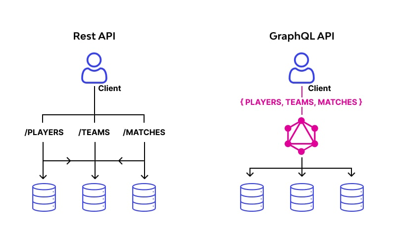
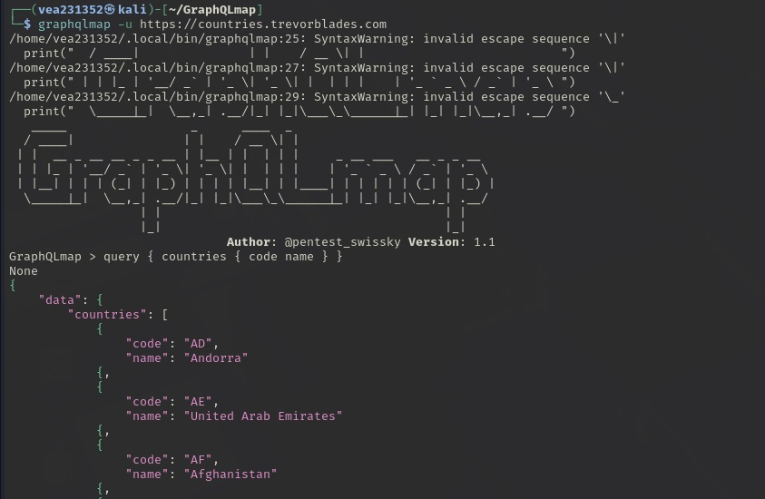
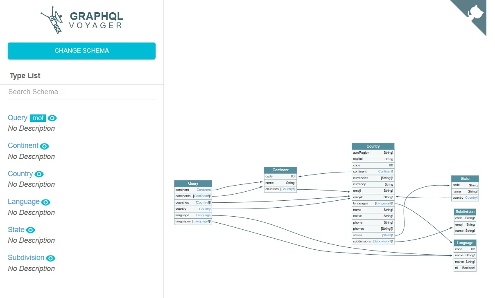
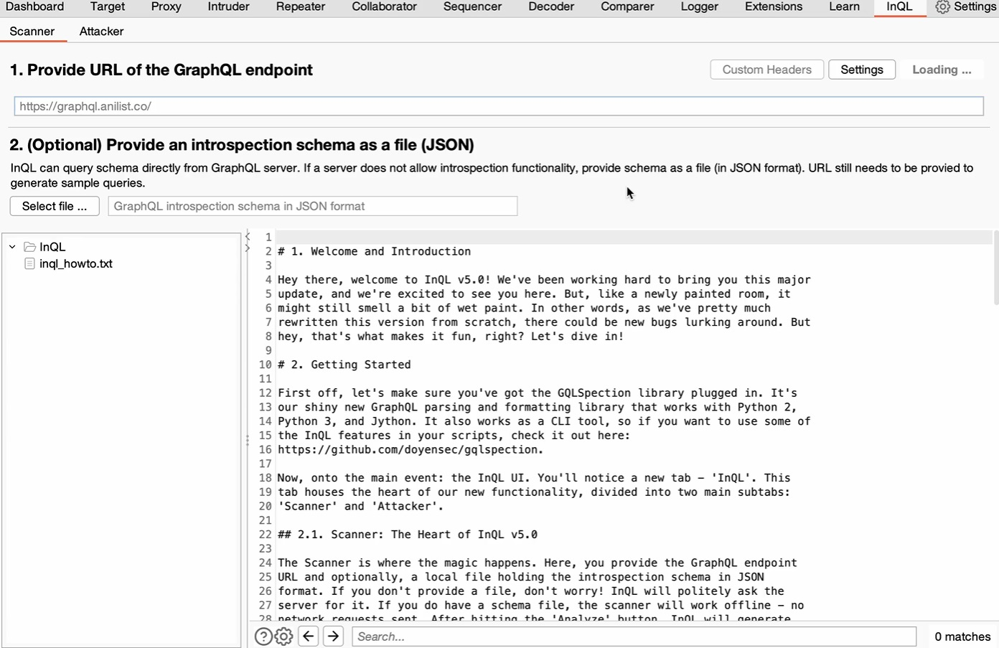

GraphQL – это язык запроса API, который позволяет клиентам гибко запрашивать только нужные данные. В отличие от REST API , GraphQL позволяет объединить несколько запросов в один, что делает его более эффективным. Однако его гибкость и универсальность создают серьезные проблемы безопасности, если API не настроен должным образом. В этой статье рассмотрены основные моменты воздействия на GraphQL , методы защиты и инструменты тестирования безопасности.
GraphQL и REST – два варианта построения API, но они различаются принципами работы.
REST (передача репрезентативного состояния) строится на основе количества эндпоинтов, каждый из которых отвечает за текущий ресурс (например, /players, /teams, /matches). Клиент делает несколько запросов к разным эндпоинтам, чтобы получить нужные данные. Это может привести к: резервной передачи данных ( over-fetching), когда клиент получает больше информации, чем необходимо; недостаточная передача данных ( under-fetching), когда клиенту приходится делать несколько запросов, чтобы собрать всю необходимую информацию. GraphQL использует единый конечный пункт ( /graphql), который принимает запросы на получение только исходных данных. Клиент может задать вопросы по конкретным вопросам, избегая проблем over-fetchingи under-fetchingт. д. Однако такой подход порождает новые риски: Возможность удаления скрытых данных, если схема API не настроена должным образом; уязвимость к механизмам рекурсивным запросам, которые могут перезагружать сервер.
Схема : Определить типы данных, доступные в API, и отношения между ними. Схема контракта между клиентом и сервером, описывающая, какие запросы можно выполнить и какие данные можно получить. Типы : основные схемы построения блоков. Включают скалярные типы (например, Int, String, Boolean) и объектные типы, которые могут содержать несколько полей различных типов. Запросы : используются для чтения данных. Клиент определяет структуру запроса, и сервер получает данные точно в таком же формате. Мутации : используются для изменения данных (создания, обновления, удаления). Подписки : разрешить клиенту получать обновления в мгновение ока при просмотре данных на расстоянии. Пример схемы GraphQL:
type Author {
id: ID!
name: String!
books: [Book]
}
type Book {
id: ID!
title: String!
author: Author
}В данном методе используются методы и методы, Authorа Book также запросы на получение списков авторов, книг и книг по ID. Мутация addBook Позволяет добавить новую книгу с именем и идентификатором автора.
В GraphQL встроена возможность самоанализа (самоанализа), которая позволяет клиенту запрашивать API модели, включая все доступные типы, запросы и мутации. Хоть это и удобно, но может стать уязвимым, если не отключить его заранее. Злоумышленник, получивший доступ к шаблону, может использовать его для поиска скрытых API и уязвимых эндпоинтов. Запрос самоанализа в GraphQL Playground:
{
__schema {
types {
name
fields {
name
}
}
}
}GraphQL-инъекции похожи на традиционные SQL-инъекции. Всегда, когда входные данные пользователя обрабатываются без проверок и используются для выполнения внутреннего запроса. Пример GraphQL-инъекции:
{
user(id: "1 OR 1=1") {
username
}
}В случае уязвимости API оно может вернуть список всех пользователей вместо одного. Что может привести к утечке конфиденциальной информации. Другой вариант лечения – внедрение в мутации:
{
mutation {
updateUser(id: "1", username: "hacker") {
username
}
}
}Если сервер ранее не получил доступа к правам, атакующий может изменить данные других пользователей.
GraphQL позволяет создавать вложенные запросы, которые могут быть использованы злоумышленниками для перегрузки сервера. Если сервер не ограничивает ввод рекурсивных запросов, злоумышленник может создать бесконечную рекурсию и вызвать отказ в обслуживании. Пример атаки:
{
user {
friends {
friends {
friends {
username
}
}
}
}
}Если сервер не настроен на ограничение вложенных запросов, он будет обрабатывать их до полного исчерпания ресурсов.
const express = require('express');
const { graphqlHTTP } = require('express-graphql');
const { makeExecutableSchema } = require('@graphql-tools/schema');
const depthLimit = require('graphql-depth-limit');
const typeDefs = `
type Query {
hello: String
}
`;
const resolvers = {
Query: {
hello: () => 'Hello world!',
},
};
const schema = makeExecutableSchema({ typeDefs, resolvers });
const app = express();
app.use(
'/graphql',
graphqlHTTP({
schema: schema,
validationRules: [depthLimit(5)],
})
);
app.listen(4000, () => {
console.log('Server is running on http://localhost:4000/graphql');
});В данном примере используется промежуточное программное обеспечение graphql-depth-limit для ограничения глубины запроса до 5 уровней, которое помогает предотвратить воздействие с использованием дополнительного запроса. Реализация современной меры безопасности позволит защитить GraphQL API от указанных уязвимостей и обеспечить стабильную и безопасную работу сервиса.
GraphQLmap – автоматизированный инструмент для тестирования GraphQL API на уязвимости.
GraphQL Voyager – инструмент для визуализации API схем и поиска уязвимостей.
InQL (Burp Suite Plugin) – расширение Burp Suite для анализа GraphQL API и обнаружения скрытых эндпоинтов.
GraphQL — гибкий инструмент для построения API, но требует строгих мер безопасности. Используй ограничения, валидацию, аутентификацию и тестовые инструменты, чтобы предотвратить возможные уязвимости.